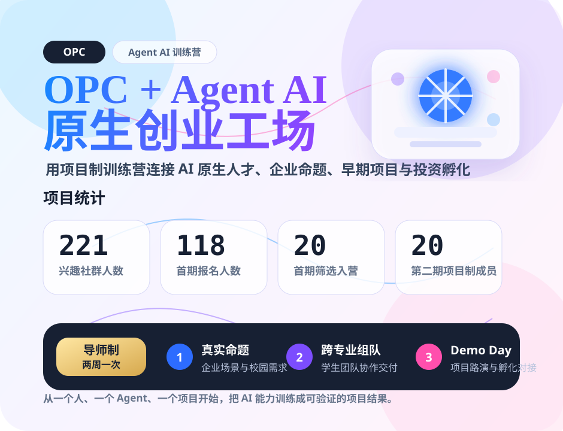

项目需求方
企业或行业导师提出真实业务命题，定义可验证的交付目标，提供场景数据和用户反馈渠道。
以项目制训练营为入口，建立 AI 原生人才与早期项目的生成、筛选和孵化平台。我们帮助学生、行业人士和创业者掌握 Agent 驱动的工作方式，组建小团队，在真实业务场景中完成从想法到 MVP、从能力到商业化的闭环。不是普通培训，也不是等项目成熟后的孵化器——我们从第 0 天就开始。
训练营以真实业务场景为起点，围绕一个可交付的项目目标组建小队。项目需求方提出真实命题，跨专业学生组队，在主讲老师 + 行业导师 + 助教的辅导体系下，用 Agent 工作流完成需求访谈、方案设计、MVP 开发和 Demo 演示。
企业或行业导师提出真实业务命题，定义可验证的交付目标，提供场景数据和用户反馈渠道。
技术、产品、设计、商业等不同背景的学生混合组队，在真实协作中补齐各自的能力短板。
高校导师负责课程框架与方法论，行业一线工程师、创业者和投资人担任实战导师，双轨辅导让学生在真实商业场景中获得反馈。
往期优秀学员担任助教，配合 Agent 辅助调研、代码生成、内容生产和项目管理，提升团队效率。
OPC 导师体系由高校导师与行业导师共同组成。深圳大学 PLAN Lab 导师团队负责课程框架、方法论与学术指导；同时我们会邀请行业第一线的工程师、创业者和投资人担任实战导师，让学生在真实商业场景中获得反馈。覆盖 LLM Agent、区块链、无线通信、社交网络数据挖掘与物联网等多个研究方向。
OPC 不是普通培训，也不是等待项目成熟后的孵化器。我们从真实命题、跨专业组队和 Agent 工作流开始，用导师制双周推进，让训练、筛选和孵化发生在同一条项目路径上。

以项目制训练为核心，每两周一次导师辅导和进展检查，围绕 Agent 工具链、真实场景需求、团队协作和 Demo 交付持续推进。
先通过兴趣社群和报名表收集候选人，再结合方向兴趣、执行意愿、专业背景和组队匹配筛选入营，形成小班项目制团队。
无论你是企业、高校还是投资人，都可以通过以下入口与 OPC 建立合作。
项目需求方 · 培训共建 · 投资孵化 —— 覆盖企业命题、课程共建到投资孵化的全链路。
有业务场景想用 Agent 验证？发布企业命题，与学生团队低成本共创 PoC。
高校或机构想共建项目制课程？我们提供课程体系、导师辅导和运营 SOP。
寻找早期 AI 原生项目和可验证团队？接入 Demo Day 和项目库筛选。
项目按训练营期数沉淀，覆盖金融投资、教育科研、心理健康、AIGC 工具、行业 Agent 和文娱消费。
第二期训练营共诞生 6 个 AI 原生项目，覆盖金融投资、教育科研、心理健康、AIGC 工具、行业 Agent 和文娱消费。以下为各项目的展示与开源链接。
从 118 份报名信息中提取年级、学院与专业背景分布，帮助高校、企业和投资人理解 OPC 的人才池结构。